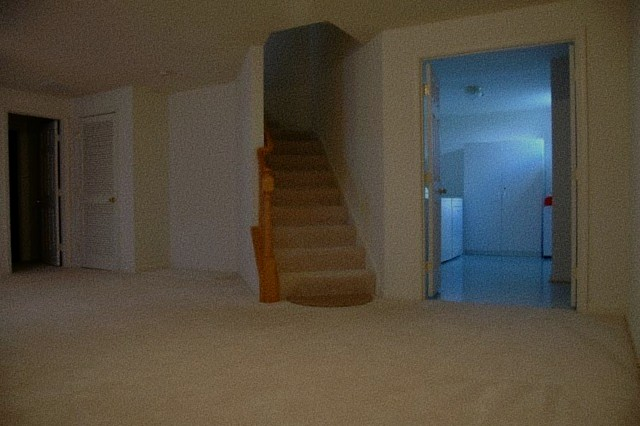

What Is A Liminal Space?
Liminal space images often depict places of transition, such as an airport, but devoid of people or typical signs of human presence. Many liminal space images depict public places that are familiar to most people, which can result in a sense of nostalgia for these images, despite never physically being in the place the image depicts. Many liminal space images feel “off” due to their lack of context in addition to depicting places that lack a purpose, such as a doorway leading to a brick wall.


Helpful Resources To Learn More About Liminal Spaces
If you want to learn more, you should check out this helpful video essay on Liminal Spaces by Solar Sands. My first exposure to the concept of liminal spaces was through watching this video, where I became both fascinated and curious to learn more about them.
Watch Video
If you want to explore one of the largest liminal space communities, you should check out the Back Rooms Wiki, which is a collection of over 1000 community made pages on liminal space themed content.
View Website
If you enjoy liminal spaces and found footage style horror films, Kane Pixels has created an excellent video series based on people “no-clipping” through reality into a nearly infinite monotone yellow liminal space inhabited by dangerous monsters and bacteria.
View Channel